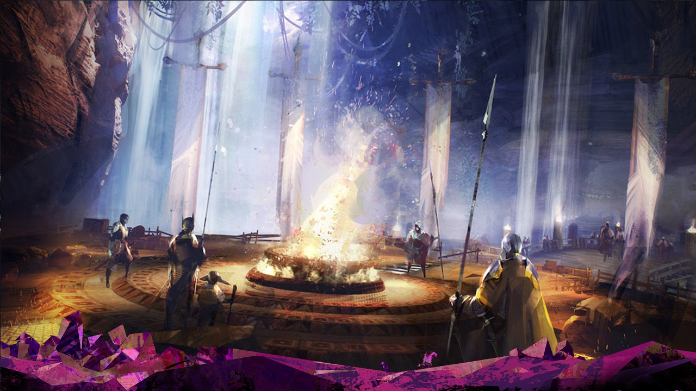

Archiwum | Newsy
Archiwum Newsów
| 13.11.2018 | Revamping Run i Sigili |
Od 13 listopada będziemy się mogli cieszyć sporymi zmianami dotyczącymi run. W dniach od drugiego do trzeciego listopada trwała akcja charytatywnej zbiórki pieniędzy na rzecz chorych dzieci. W związku z tym każdy kto zalogował się w pierwszym dniu eventu otrzymał tytuł "The Extra Life", oraz czasowy bonus. Ponadtwo trwa akcja wyprzedaży znana jako Black Firday. W jej ramach możemy cieszyć się przeceną -50% na dodatki oraz pierwszą część gry oraz darmowymi przedmiotami do odebrania z gemstore'a. |
| 16.10.2018 | Shadow of the Mad King 2018 |
Niespokojne duchy powracają jak co roku w październiku do świata Tyrii. Już 16 października do gry ponownie zawita haloween znane również jako Shadow of the Mad King. W tym roku oprócz klasycznych zabaw znanych z poprzednich edycji czekają na nas zupełnie nowe wyzwania i atrakcje. |
| 11.09.2018 | A Star to Guide Us |
Już 18 września przyjdzie nam cieszyć się nowym epizodem living story. Odcinek zatytułowany "A Star To Guide Us" będzie koncentrował się na Aurene, oraz na roli jaką przyjdzie jej odegrać w przyszłości Tyrii. Oprócz klimatycznego lore ponownie odwiedzimy znaną nam już z pierwszej części gry lokację Jahai Bluffs, a także będziemy mogli rozwijać nową instancję powiązaną tematycznie z Zakonem Słonecznych Włóczni nazwanym tym razem "Sun's Refuge". Będzie to swoisty quest hub, którego rozwój dostarczy nam nowych przygód, a i być może uszczupli nieco nasze portfele. |
| 09.08.2018 | Nowe bronie z Design a Weapon Contest 2017, Nowe Zbroje, oraz Boss Blitz Bonanza |
Wraz ze zbliżającymi się urodzinami Guild Wars 2 Arena Net przygotowała dla nas szereg niespodzianek. A wśród nich:
|
| 17.07.2018 | Festival of the Four Winds |
24 Lipca rozpocznie się nowy coroczny Festival of the Four Winds. Będzie się on składał się z dwóch osobnych eventów, które ostatni raz moglismy zoabczyc w Living World Season 1. Mianowicie Crown Pavilion i Labyrinthine Cliffs. Zawdzieczamy go Królowej Jennah z Kryty, Zefirytom, Lwiej strazy, oraz Black Lion Trading Company. |